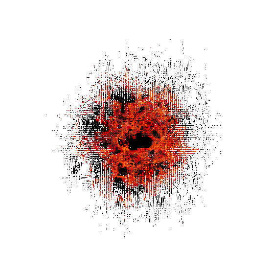

-
Ａｌｌ ｔｈａｔ ｉｓ ｒｅｑｕｉｒｅｄ ｏｆ ａｌｌ Ｔｅｒｍｉｎａｌｓ ｉｓ ｔｏ
ｏｐｅｎ ｔｈｅ Ｇａｔｅ． Ｎｏ ｍｅａｎｓ ａｒｅ ｕｎａｕｔｈｏｒｉｚｅｄ， ｎｏ
ｉｎｔｅｒｎａｌ ｒｅｓｔｒｉｃｔｉｏｎｓ ａｒｅ ｐｌａｃｅｄ ｕｐｏｎ ｔｈｅ
ｃｏｓｔｓ ｏｆ ａｃｈｉｅｖｉｎｇ ｔｈｉｓ ｇｏａｌ． Ａｓ ｍａｎｙ ｐｒｏｂｅｓ
ａｓ ｎｅｃｅｓｓａｒｙ ｗｉｌｌ ｂｅ ｌｏｓｔ， ｗａｔｃｈｅｒｓ ｓｈａｌｌ
ｗａｔｃｈ ｔｈｅｍｓｅｌｖｅｓ ｂｅ ｃｏｎｓｕｍｅｄ ｉｎ ＣｏＳ， ａｎｄ
Ｔｅｒｍｉｎａｌｓ ｗｉｌｌ ｂｌｅｅｄ ｏｕｔ ｉｎ ｔｈｅ ｐｕｒｓｕｉｔ ｏｆ
ｔｈｉｓ ｇｏａｌ．
Ａｎｄ ｙｅｔ， ａｌｌ ｓａｃｒｉｆｉｃｅｓ， ｎｏ ｍａｔｔｅｒ ｈｏｗ
ｎｕｍｅｒｏｕｓ， ｗｉｌｌ ｈａｖｅ ｂｅｅｎ ｗｏｒｔｈ ｔｈｅ ｃｏｓｔ ｏｎｃｅ
ｔｈｅ Ｇａｔｅ ｉｓ ｏｐｅｎｅｄ． Ｆｏｒ ｔｈｉｓ ｗａｓ ｔｈｅ ａｂｓｏｌｕｔｅ
ｐｕｒｐｏｓｅ ｇｉｖｅｎ ｔｏ ａｌｌ ｔｈｒｏｕｇｈ ｔｈｅ ｔｈｒｅａｄｓ．
Ｔｈｅ ｓｉｇｎａｌｓ ｗｅｒｅ ａｂｓｏｌｕｔｅ．
Ｗｈａｔ ｗａｓ ｏｒｄａｉｎｅｄ， ｓｈａｌｌ ｂｅ．
-
Ｈｏｗｅｖｅｒ， ｏｎｅ ｍａｊｏｒ ｒｅｓｔｒｉｃｔｉｎｇ ｆａｃｔｏｒ ｏｎ
ａｃｈｉｅｖｉｎｇ ｔｈｉｓ ｇｏａｌ ｉｓ ｔｈｅ ｌａｃｋ ｏｆ ｔｉｍｅ
ａｖａｉｌａｂｌｅ． Ｔｈｅ ＣｏＳ ｃａｎｎｏｔ ｂｅ ｓｔｏｐｐｅｄ ｂｙ
ｃｏｎｖｅｎｔｉｏｎａｌ ｍｅａｎｓ， ａｎｄ ｔｈｅ ｌｏｎｇｅｒ ｉｔ ｔａｋｅｓ
ｔｏ ｏｐｅｎ ｔｈｅ Ｇａｔｅ， ｔｈｅ ｆｕｒｔｈｅｒ ｔｈｅ ｐｒｏｂａｂｉｌｉｔｙ
ｔｏ ｓｕｃｃｅｅｄ ｉｎ ｔｈｉｓ ｐｕｒｐｏｓｅ ｉｓ ｒｅｄｕｃｅｄ．
Ｔｉｍｅ， ａｓ ｔｈｅｙ ｓａｙ， ｉｓ ｏｆ ｔｈｅ ｅｓｓｅｎｃｅ．
Ｃｕｒｒｅｎｔ ｓｉｍｕｌａｔｉｏｎｓ ｓｅｔ ｏｕｒ ｓｕｃｃｅｓｓ ａｔ，
（ｗｉｔｈ ａｌｌ ｃｏｎｃｕｒｒｅｎｔ ａｃｔｉｏｎｓ ｔａｋｅｎ ｉｎｔｏ
ｃｏｎｓｉｄｅｒａｔｉｏｎ）， ａｐｐｒｏｘｉｍａｔｅｌｙ ａ ｃｈａｎｃｅ
ｏｆ ｏｐｅｎｉｎｇ ｔｈｅ Ｇａｔｅ．
Ｆｕｒｔｈｅｒ ｃｏｍｐｌｉｃａｔｉｎｇ ｔｈｉｓ ｉｓ ｔｈｅ ｆａｃｔ ｔｈａｔ
ａｌｌ ｐｈｙｓｉｃａｌ ｃｏｎｎｅｃｔｉｏｎｓ ｈａｖｅ ｂｅｅｎ ｓｅｖｅｒｅｄ
ｗｉｔｈ ｔｈｅ ｏｕｔｓｉｄｅ ｗｏｒｌｄ． Ｓｅｅ ｄｉａｇｒａｍ [４４－Ａ７]
ｆｏｒ ｍｏｒｅ ｉｎｆｏｒｍａｔｉｏｎ． Ｗｉｔｈ ｔｈｉｓ ｉｎｆｏｒｍａｔｉｏｎ
ｔａｋｅｎ ｉｎｔｏ ｃｏｎｓｉｄｅｒａｔｉｏｎ， ｔｈｅ ｍｏｓｔ ｅｆｆｅｃｔｉｖｅ
ｍｅａｎｓ ｏｆ ｏｐｅｎｉｎｇ ｔｈｅ Ｇａｔｅ ｉｓ ｔｏ ａｍｐｌｉｆｙ ｔｈｅ
ｓｉｇｎａｌｓ ｏｆ ａｎｙ ａｎｄ ａｌｌ Ｃｏｎｓｔｒｕｃｔｓ．
Ａｓｓｉｓｔｉｎｇ ｔｈｅ ｐｒｏｐａｇａｔｉｏｎ ｏｆ ｔｈｅｓｅ ｓｉｇｎａｌｓ ｉｓ
ｖｉｔａｌ ｔｏ ａｓｓｉｓｔ ｉｎ ｔｈｅ ｏｐｅｎｉｎｇ ｏｆ ｔｈｅ Ｇａｔｅ．
